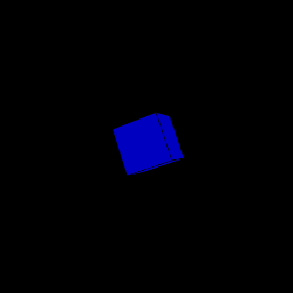

Hello,
This is my Phase 1 Project
For this project, my time-based media of choice was Music Visualization. I have always been keen on exploring this realm of technology and through this project I wanted to learn how I could combine some coding and my creativity to create my versions of these medias.
While researching I found that due to the development of high processing power, there were multiple softwares available to visualize music using their predefined algorithms. I found the idea of using algorithms to analyze music and manipulate the visual it produces, quite interesting. Which is why, I started to learn and develop my own versions of these algorithms using guidance from my professor.
Below are my first iterations of my algorithmic sound visualizers.


-
Observing these visuals and taking inspiration from the cube, I wanted to further develop my coding skills to make a more complex visual of the cube by creating a more repetitive form to further tie it into my aesthetic.


I was pretty excited with this outcome because I was able to map different levels of frequencies into different parts of this cube, but I kept exploring and refining this visual to form the one below. I sort off combined the idea of a cube shape but formed by an array of spheres which created a very intricate and ambiguous visual.


In order to synthesize and display my process I decided to create a 60 second visual reacting to some music, you can find it below.
--